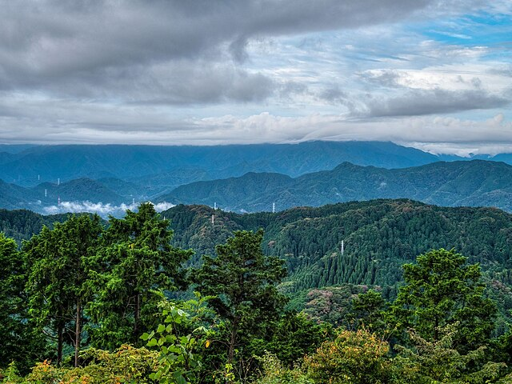
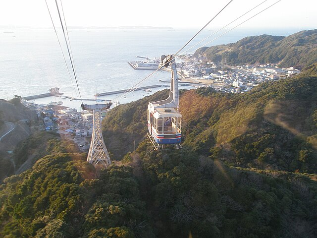
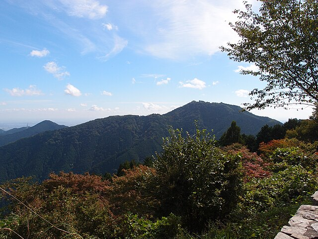
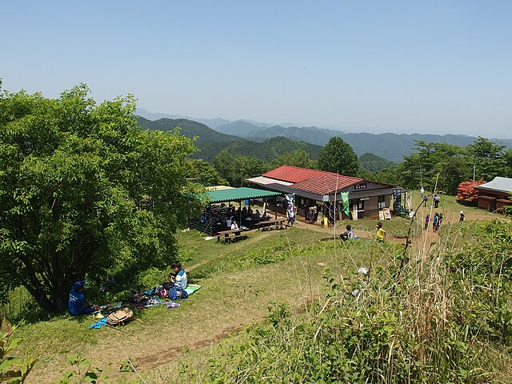

「冬山は危険」「アイゼンがないと登れない」と思っていませんか？実は関東の低山を中心に、厳冬期でもアイゼンなしで楽しめる山が多くあります。雪のない冬山は空気が澄んで眺望が抜群、かつ虫や藪もなく、ある意味では最も快適な季節でもあります。
関東地方の標高1000m前後の山は、太平洋側の気候の影響を受けやすく、冬でも積雪が少ない傾向にあります。
電車・バスだけで行ける日帰り登山をまとめて探したい方は電車で行ける日帰り登山の検索ページもあわせてご覧ください。
関東地方の標高1000m前後の山は、太平洋側の気候の影響を受けやすく、冬でも積雪が少ない傾向にあります。
電車・バスだけで行ける日帰り登山をまとめて探したい方は電車で行ける日帰り登山の検索ページもあわせてご覧ください。
⚠️ 注意事項
天候や気温によっては凍結するため、完全に不要とは限りません。出発前に山の状態を確認し、念のためチェーンスパイクを携行することをおすすめします。
天候や気温によっては凍結するため、完全に不要とは限りません。出発前に山の状態を確認し、念のためチェーンスパイクを携行することをおすすめします。
おすすめ5山
① 高尾山
東京都・標高599m

🚗 車新宿から約50分
🚃 電車新宿から電車約50分
コース定数8〜51※日帰り標準ルートは14前後（縦走含む場合の幅）❄️ 通年アイゼン不要
特徴標高599mで積雪はほとんどなし。冬晴れの日は山頂から富士山が美しく見える絶好のシーズン。
👍 おすすめ理由：都心から最もアクセスしやすい山のひとつ。冬は混雑が少なく、透き通った空気の中で富士山の絶景を独り占めできます。
高尾山の詳細情報を見る →
② 鋸山
千葉県・標高329m

🚗 車新宿から約1時間30分
🚃 電車東京から電車約1時間50分
コース定数6〜10❄️ 通年アイゼン不要
特徴千葉県の低山ながら、巨大な石切り場跡・日本一の大仏・絶壁「地獄のぞき」と見どころが詰まった個性派の山。ロープウェイでも登れます。
👍 おすすめ理由：標高は低いですが冬でも完全にアイゼン不要で安心して歩けます。絶景スポットが多く、冬の澄んだ空気の中で東京湾越しに富士山が見えることもあります。
鋸山の詳細情報を見る →
③ 大山（丹沢）
神奈川県・標高1,252m

🚗 車大船・横浜から約45〜60分
🚃 電車新宿から電車＋バス約1時間20分
コース定数12〜46❄️ 積雪少（要確認）
特徴丹沢の玄関口。1200m台の山ながら太平洋側気候で積雪は少なく、冬でも比較的安全に登れます。
👍 おすすめ理由：冬は空気が澄んで、山頂からの相模湾・房総半島の眺望が特に素晴らしい。紅葉シーズン後の静かな山を楽しみたい方におすすめです。
大山（丹沢）の詳細情報を見る →
④ 御岳山
東京都・標高929m

🚗 車新宿から約1時間15分
🚃 電車新宿から電車・バス約1時間40分
コース定数8〜14❄️ 積雪少（要確認）
特徴ケーブルカーで山上まで行けるアクセスの良さが魅力。山上には集落があり、宿坊や茶店も充実しています。
👍 おすすめ理由：ケーブルカーを利用すれば体力的に余裕があり、冬でも安全に楽しめます。ロックガーデンなど変化に富んだコースが魅力です。
御岳山の詳細情報を見る →
⑤ 陣馬山
東京都・標高857m

🚗 車新宿から約1時間10分
🚃 電車新宿から電車・バス約1時間20分
コース定数3〜81※日帰り標準ルートは15前後（縦走含む場合の幅）❄️ 積雪少（要確認）
特徴標高850m台で積雪はほぼなし。冬は落葉して見通しが良く、稜線歩きが快適に楽しめます。
👍 おすすめ理由：冬は登山者が少なく静かな山歩きが楽しめます。高尾山への縦走コースと組み合わせれば充実した一日になります。
陣馬山の詳細情報を見る →
冬山登山で気をつけること
🧥 服装
体温調節しやすいレイヤリングが基本です。汗冷えを防ぐため、汗をよく吸い速乾性の高いベースレイヤーを選びましょう。
🥾 装備
低山でもチェーンスパイク（軽アイゼン）を念のため持参すると安心。凍結した登山道に対応できます。持ち物に不安がある方は冬山の持ち物チェックリストも確認しておきましょう。
🌅 日没
冬は日没が早いため、15〜16時には下山できるよう計画を立ててください。
まとめ：冬こそ低山登山のベストシーズン
アイゼン不要の関東低山は、冬でも安全に楽しめる貴重な登山フィールドです。空気の澄んだ冬晴れの日に、ぜひ一座を目指してみてください。